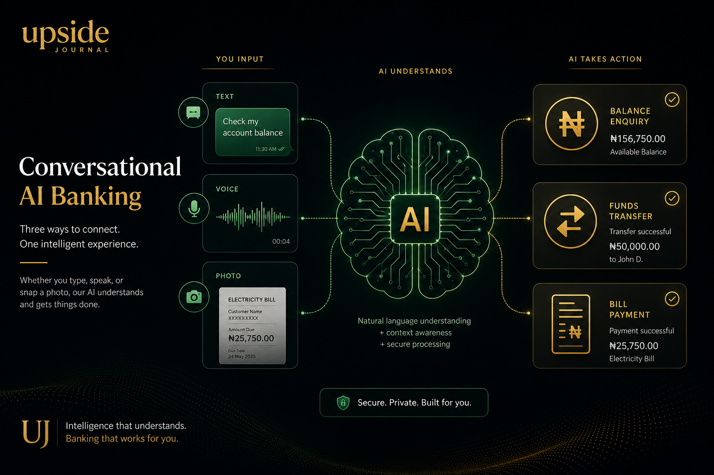

The most successful fintech product in Nigeria right now doesn't have an app. It doesn't have a website you can log into, a card you can tap, or a branch you can walk into. It lives entirely inside a WhatsApp chat.
Xara — a conversational AI banking assistant built by 25-year-old Nigerian software engineer Sulaiman Adewale — has crossed ₦10 billion ($6.2 million) in transaction volume and reached 50,000 active users in its first year of operation. It is bootstrapped. It has announced no venture funding. And its founder received a job offer from Elon Musk's xAI after a product demo went viral on X.
This is the story of a startup that didn't try to reinvent banking. It just put banking where Nigerians already are.
The Origin: A Personal Problem
Xara wasn't born from a pitch deck or a market analysis. It started because Sulaiman Adewale is short-sighted.
“My short-sightedness was the trigger,” Adewale has said. Routine transactions — reading numbers on receipts, navigating small-font banking apps — were unnecessarily difficult. But the deeper realisation was that the friction wasn't unique to him. Millions of Nigerians found digital payments harder than they needed to be, not because they lacked intelligence, but because the tools assumed too much.
“I started working on Xara because I wanted a very simple payment system that works even for people who are not very tech-savvy,” Adewale explained. “Building on WhatsApp wasn't because it was trendy — it was common sense. WhatsApp is the platform where almost everybody is already.”
He's not wrong. WhatsApp is used by 95% of Nigeria's 31.6 million social media users. It is, for practical purposes, the country's default communication layer.
How Xara Works
Xara is a multimodal AI assistant that turns WhatsApp conversations into financial transactions. Users add Xara's WhatsApp number, complete a quick onboarding, receive a virtual account number through a regulated banking partner, and then manage their finances the way they'd text a friend.
The system understands:
• Text commands: “Send ₦10,000 to Abubakar for breakfast”
• Voice notes: Spoken instructions in English or Nigerian Pidgin, with Hausa and Yoruba support in development
• Images: Snap a photo of an account number or receipt and Xara processes it
• Spending analysis: Ask “how much did I spend on transport this month?” and receive an instant breakdown
Behind the interface, Xara runs on a large language model trained specifically for Nigerian speech patterns, accented English, and local context. It processes transactions in real time, remembers previous conversations, saves beneficiaries, and can schedule future payments.

Critically, Xara doesn't hold customer funds. It operates as a conversational AI layer on top of regulated banking infrastructure — partnering with licensed payment service banks to handle actual money movement. This means users get the convenience of AI-powered banking with the regulatory protection of established financial institutions.
The platform is certified by the Nigeria Data Protection Commission (NDPC), adding another layer of credibility in a market where data security concerns can make or break a fintech product.
The Numbers Tell the Story
Xara's growth trajectory reads like a masterclass in product-market fit:
• Week 2 (June 2025): 10,000 users, ₦135 million processed
• Day 100: 22,000 users, growth so fast that initial banking partner 9PSB couldn't handle the inflow, forcing a pause in new registrations
• Month 10 (April 2026): 45,000 users, ₦8 billion in transactions
• Day 300 / Year 1 (June 2026): 50,000 users, ₦10 billion ($6.2 million) in total transactions
The acceleration is the key detail. It took Xara seven months to reach its first ₦4 billion in transactions. It took only three months to add the next ₦4 billion. By the time the ₦10 billion milestone landed, transaction volume was doubling every quarter.
For a bootstrapped company with no announced funding, these numbers represent something unusual in the Nigerian fintech landscape: organic growth driven entirely by product quality and word-of-mouth.
The xAI Moment
In April 2026, Adewale posted a product demo on X that went viral. The video showed Xara processing complex financial commands through natural conversation — the kind of seamless AI-human interaction that tech companies spend billions trying to achieve.
The response included a direct recruitment outreach from xAI, Elon Musk's artificial intelligence research company.
“It was an extra layer of validation for a product I initially built because I am short-sighted,” Adewale said. He acknowledged the opportunity but made his position clear: he would only consider it if it didn't come at the expense of his startup. With Xara crossing ₦10 billion in transactions, that calculus has likely become even more straightforward.
Why Xara Matters at Cannes Season
While Xara hasn't publicly confirmed attendance at Cannes Lions 2026, the startup represents a paradigm shift that the festival's Innovation and Creative Technology categories are increasingly designed to recognise.
The thesis is simple but powerful: the best banking app is the one people already use. In Nigeria, that's WhatsApp. Xara didn't ask users to download something new, create a new account, or learn a new interface. It embedded sophisticated financial technology into the communication tool 95% of the market already opens dozens of times a day.
For the brand marketers, agency leaders, and investors gathering in Cannes this month, Xara offers a case study in three trends that matter:
1. Conversational commerce at scale: The shift from app-based interfaces to conversational AI isn't theoretical — Xara has ₦10 billion in proof.
2. Accessibility-driven innovation: The best products often emerge from solving personal problems. Adewale's short-sightedness led to a platform that now serves 50,000 users who simply wanted banking to be simpler.
3. Bootstrapped African tech: In an ecosystem often defined by fundraising rounds, Xara's unfunded growth to ₦10 billion in transactions demonstrates that product-market fit remains the ultimate competitive advantage.
What's Next
Xara is expanding its banking partnerships to give users more choice in their underlying financial provider. Local language support — Hausa and Yoruba — is in active development, which would dramatically expand the platform's addressable market beyond English and Pidgin speakers. And the pace of growth suggests that the ₦10 billion milestone is a waypoint, not a destination.
Adewale's vision remains grounded: “I'm a proponent of taking technology to the people. I don't want people to have to download anything unless they have to.”
For 50,000 Nigerians and counting, they don't have to.
FAQ
What is Xara?
Xara is a WhatsApp-based AI banking assistant built by Nigerian software engineer Sulaiman Adewale. It allows users to send money, pay bills, analyse spending, and manage finances through natural conversation inside WhatsApp.
How much has Xara processed?
As of June 2026, Xara has processed over ₦10 billion ($6.2 million) in transactions and reached 50,000 active users within its first year of operation — all without announced venture funding.
Is Xara safe to use?
Xara is certified by the Nigeria Data Protection Commission (NDPC) and uses end-to-end encryption. It does not hold customer funds directly — instead, it partners with regulated banking institutions to process transactions.
Who is Sulaiman Adewale?
Sulaiman Adewale is a Nigerian software engineer and the founder of Xara. He built the platform after his own short-sightedness made routine banking transactions difficult, leading him to create a simpler, conversational approach to financial management. His work attracted a recruitment offer from Elon Musk's xAI.
This article is part of Upside Journal's “Nigerian Tech at Cannes Lions 2026” series, profiling the startups and founders shaping Nigeria's technology landscape. Read more at theupsidejournal.com.